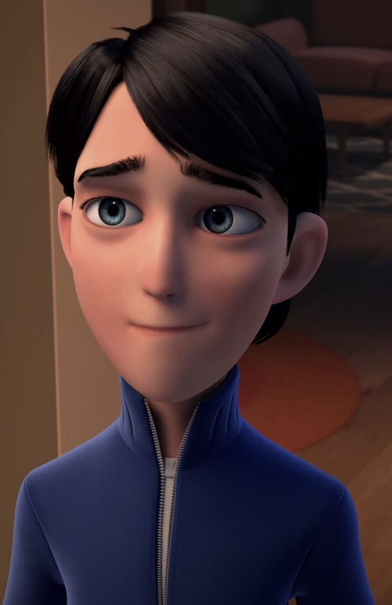
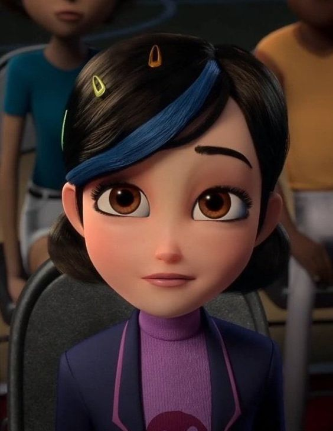
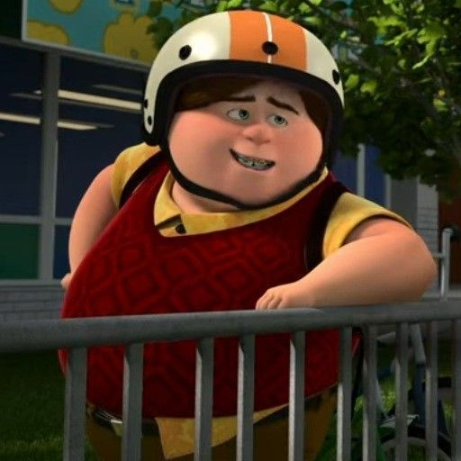
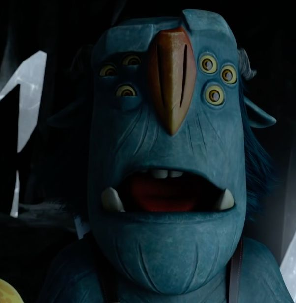
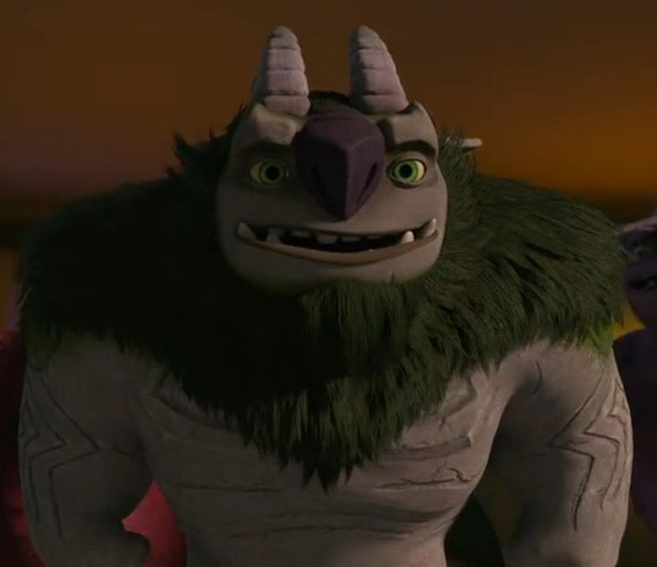

s
Jovem atlas
Jovem Atlas
personagens principais
Jim Lake Jr.
O primeiro humano a ser um caçador de trolls

Clara Nunes
Amiga e interesse amoroso de Jim, corajosa e inteligente

Bobby Domzalski
Melhor amigo de Jim, sempre alegre e contente

Blinky
Um troll inteligente, ajuda jim em quase tudo

AAAAAAAAAAA(sim)
Troll forte, mas bondoso, amigo de Blinky, Jim, Bobby e Clara
